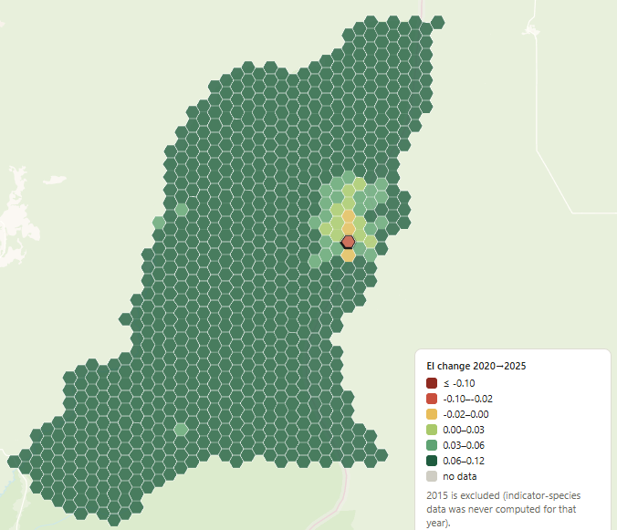
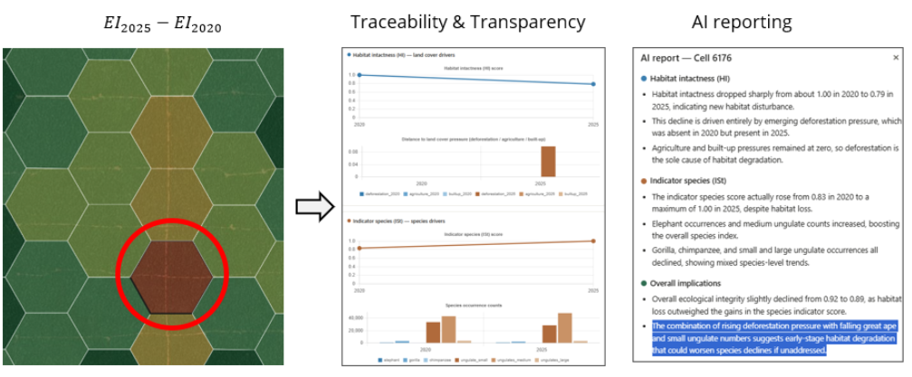

Verifiable Nature Units and ecological integrity
An end-to-end software pipeline that automates the calculation of Verifiable Nature Units for biodiversity credits. Built in components with clear scope and daily stand-ups to catch mismatches early.
The ecological integrity explorer is an interactive map on top of the pipeline's outputs. It shows how ecological integrity changed between 2020 and 2025 per grid cell, and what drives it: habitat intactness and an indicator species score.
Pipeline complete; now being scaled to more protected areas.
Working prototype



Open the explorer prototype
A prototype example to show the approach, not a final result.